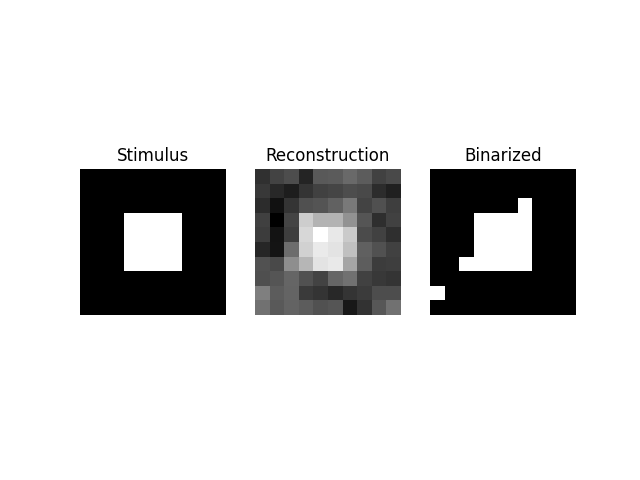
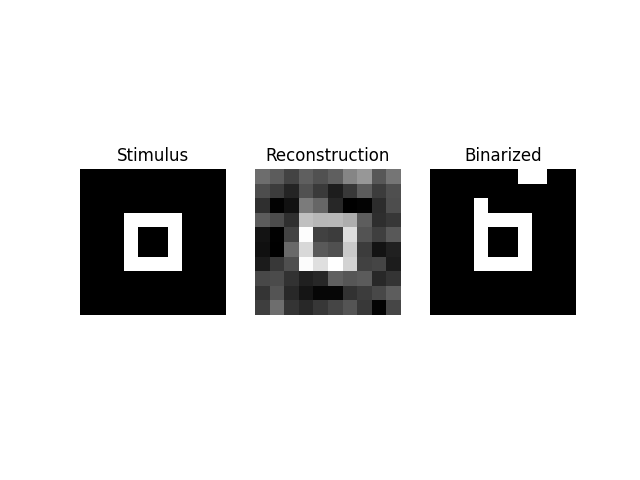
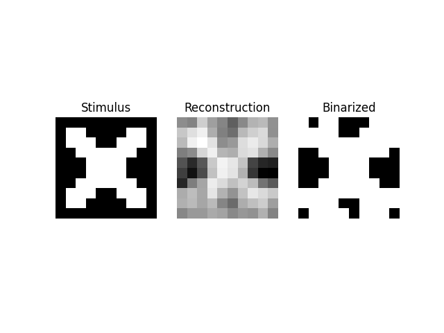
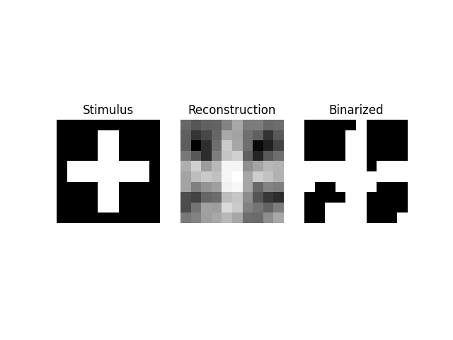
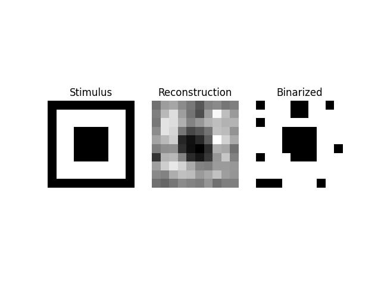
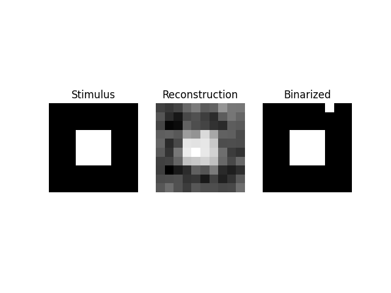

Note
Click here to download the full example code or to run this example in your browser via Binder
9.3.16. Reconstruction of visual stimuli from Miyawaki et al. 2008¶
- This example reproduces the experiment presented in
Visual image reconstruction from human brain activity using a combination of multiscale local image decoders, Miyawaki, Y., Uchida, H., Yamashita, O., Sato, M. A., Morito, Y., Tanabe, H. C., … & Kamitani, Y. (2008). Neuron, 60(5), 915-929.
It reconstructs 10x10 binary images from functional MRI data. Random images are used as training set and structured images are used for reconstruction.
The code is a bit elaborate as the example uses, as the original article, a multiscale prediction on the images seen by the subject.
See also Encoding models for visual stimuli from Miyawaki et al. 2008 for a encoding approach for the same dataset.
# Some basic imports
import time
import sys
9.3.16.1. First we load the Miyawaki dataset¶
from nilearn import datasets
sys.stderr.write("Fetching dataset...")
t0 = time.time()
miyawaki_dataset = datasets.fetch_miyawaki2008()
# print basic information on the dataset
print('First functional nifti image (4D) is located at: %s' %
miyawaki_dataset.func[0]) # 4D data
X_random_filenames = miyawaki_dataset.func[12:]
X_figure_filenames = miyawaki_dataset.func[:12]
y_random_filenames = miyawaki_dataset.label[12:]
y_figure_filenames = miyawaki_dataset.label[:12]
y_shape = (10, 10)
sys.stderr.write(" Done (%.2fs).\n" % (time.time() - t0))
Out:
Fetching dataset...First functional nifti image (4D) is located at: /home/circleci/nilearn_data/miyawaki2008/func/data_figure_run01.nii.gz
Done (0.00s).
9.3.16.2. Then we prepare and mask the data¶
import numpy as np
from nilearn.input_data import MultiNiftiMasker
sys.stderr.write("Preprocessing data...")
t0 = time.time()
# Load and mask fMRI data
masker = MultiNiftiMasker(mask_img=miyawaki_dataset.mask, detrend=True,
standardize=False)
masker.fit()
X_train = masker.transform(X_random_filenames)
X_test = masker.transform(X_figure_filenames)
# We load the visual stimuli from csv files
y_train = []
for y in y_random_filenames:
y_train.append(np.reshape(np.loadtxt(y, dtype=int, delimiter=','),
(-1,) + y_shape, order='F'))
y_test = []
for y in y_figure_filenames:
y_test.append(np.reshape(np.loadtxt(y, dtype=int, delimiter=','),
(-1,) + y_shape, order='F'))
X_train = np.vstack([x[2:] for x in X_train])
y_train = np.vstack([y[:-2] for y in y_train]).astype(float)
X_test = np.vstack([x[2:] for x in X_test])
y_test = np.vstack([y[:-2] for y in y_test]).astype(float)
n_pixels = y_train.shape[1]
n_features = X_train.shape[1]
def flatten(list_of_2d_array):
flattened = []
for array in list_of_2d_array:
flattened.append(array.ravel())
return flattened
# Build the design matrix for multiscale computation
# Matrix is squared, y_rows == y_cols
y_cols = y_shape[1]
# Original data
design_matrix = np.eye(100)
# Example of matrix used for multiscale (sum pixels vertically)
#
# 0.5 *
#
# 1 1 0 0 0 0 0 0 0 0
# 0 1 1 0 0 0 0 0 0 0
# 0 0 1 1 0 0 0 0 0 0
# 0 0 0 1 1 0 0 0 0 0
# 0 0 0 0 1 1 0 0 0 0
# 0 0 0 0 0 1 1 0 0 0
# 0 0 0 0 0 0 1 1 0 0
# 0 0 0 0 0 0 0 1 1 0
# 0 0 0 0 0 0 0 0 1 1
height_tf = (np.eye(y_cols) + np.eye(y_cols, k=1))[:y_cols - 1] * .5
width_tf = height_tf.T
yt_tall = [np.dot(height_tf, m) for m in y_train]
yt_large = [np.dot(m, width_tf) for m in y_train]
yt_big = [np.dot(height_tf, np.dot(m, width_tf)) for m in y_train]
# Add it to the training set
y_train = [np.r_[y.ravel(), t.ravel(), l.ravel(), b.ravel()]
for y, t, l, b in zip(y_train, yt_tall, yt_large, yt_big)]
y_test = np.asarray(flatten(y_test))
y_train = np.asarray(y_train)
# Remove rest period
X_train = X_train[y_train[:, 0] != -1]
y_train = y_train[y_train[:, 0] != -1]
X_test = X_test[y_test[:, 0] != -1]
y_test = y_test[y_test[:, 0] != -1]
sys.stderr.write(" Done (%.2fs).\n" % (time.time() - t0))
Out:
Preprocessing data... Done (46.21s).
9.3.16.3. We define our prediction function¶
sys.stderr.write("Training classifiers... \r")
t0 = time.time()
# OMP: Orthogonal Matching Pursuit
from sklearn.linear_model import OrthogonalMatchingPursuit as OMP
from sklearn.feature_selection import f_classif, SelectKBest
from sklearn.pipeline import Pipeline
from sklearn.preprocessing import StandardScaler
# Create as many OMP as voxels to predict
clfs = []
n_clfs = y_train.shape[1]
for i in range(y_train.shape[1]):
sys.stderr.write("Training classifiers %03d/%d... \r" % (i + 1, n_clfs))
clf = Pipeline([('selection', SelectKBest(f_classif, k=500)),
('scl', StandardScaler()),
('clf', OMP(normalize=False, n_nonzero_coefs=10))])
clf.fit(X_train, y_train[:, i])
clfs.append(clf)
sys.stderr.write("Training classifiers %03d/%d... Done (%.2fs).\n" % (
n_clfs, n_clfs, time.time() - t0))
Out:
Training classifiers...
Training classifiers 001/361...
Training classifiers 002/361...
Training classifiers 003/361...
Training classifiers 004/361...
Training classifiers 005/361...
Training classifiers 006/361...
Training classifiers 007/361...
Training classifiers 008/361...
Training classifiers 009/361...
Training classifiers 010/361...
Training classifiers 011/361...
Training classifiers 012/361...
Training classifiers 013/361...
Training classifiers 014/361...
Training classifiers 015/361...
Training classifiers 016/361...
Training classifiers 017/361...
Training classifiers 018/361...
Training classifiers 019/361...
Training classifiers 020/361...
Training classifiers 021/361...
Training classifiers 022/361...
Training classifiers 023/361...
Training classifiers 024/361...
Training classifiers 025/361...
Training classifiers 026/361...
Training classifiers 027/361...
Training classifiers 028/361...
Training classifiers 029/361...
Training classifiers 030/361...
Training classifiers 031/361...
Training classifiers 032/361...
Training classifiers 033/361...
Training classifiers 034/361...
Training classifiers 035/361...
Training classifiers 036/361...
Training classifiers 037/361...
Training classifiers 038/361...
Training classifiers 039/361...
Training classifiers 040/361...
Training classifiers 041/361...
Training classifiers 042/361...
Training classifiers 043/361...
Training classifiers 044/361...
Training classifiers 045/361...
Training classifiers 046/361...
Training classifiers 047/361...
Training classifiers 048/361...
Training classifiers 049/361...
Training classifiers 050/361...
Training classifiers 051/361...
Training classifiers 052/361...
Training classifiers 053/361...
Training classifiers 054/361...
Training classifiers 055/361...
Training classifiers 056/361...
Training classifiers 057/361...
Training classifiers 058/361...
Training classifiers 059/361...
Training classifiers 060/361...
Training classifiers 061/361...
Training classifiers 062/361...
Training classifiers 063/361...
Training classifiers 064/361...
Training classifiers 065/361...
Training classifiers 066/361...
Training classifiers 067/361...
Training classifiers 068/361...
Training classifiers 069/361...
Training classifiers 070/361...
Training classifiers 071/361...
Training classifiers 072/361...
Training classifiers 073/361...
Training classifiers 074/361...
Training classifiers 075/361...
Training classifiers 076/361...
Training classifiers 077/361...
Training classifiers 078/361...
Training classifiers 079/361...
Training classifiers 080/361...
Training classifiers 081/361...
Training classifiers 082/361...
Training classifiers 083/361...
Training classifiers 084/361...
Training classifiers 085/361...
Training classifiers 086/361...
Training classifiers 087/361...
Training classifiers 088/361...
Training classifiers 089/361...
Training classifiers 090/361...
Training classifiers 091/361...
Training classifiers 092/361...
Training classifiers 093/361...
Training classifiers 094/361...
Training classifiers 095/361...
Training classifiers 096/361...
Training classifiers 097/361...
Training classifiers 098/361...
Training classifiers 099/361...
Training classifiers 100/361...
Training classifiers 101/361...
Training classifiers 102/361...
Training classifiers 103/361...
Training classifiers 104/361...
Training classifiers 105/361...
Training classifiers 106/361...
Training classifiers 107/361...
Training classifiers 108/361...
Training classifiers 109/361...
Training classifiers 110/361...
Training classifiers 111/361...
Training classifiers 112/361...
Training classifiers 113/361...
Training classifiers 114/361...
Training classifiers 115/361...
Training classifiers 116/361...
Training classifiers 117/361...
Training classifiers 118/361...
Training classifiers 119/361...
Training classifiers 120/361...
Training classifiers 121/361...
Training classifiers 122/361...
Training classifiers 123/361...
Training classifiers 124/361...
Training classifiers 125/361...
Training classifiers 126/361...
Training classifiers 127/361...
Training classifiers 128/361...
Training classifiers 129/361...
Training classifiers 130/361...
Training classifiers 131/361...
Training classifiers 132/361...
Training classifiers 133/361...
Training classifiers 134/361...
Training classifiers 135/361...
Training classifiers 136/361...
Training classifiers 137/361...
Training classifiers 138/361...
Training classifiers 139/361...
Training classifiers 140/361...
Training classifiers 141/361...
Training classifiers 142/361...
Training classifiers 143/361...
Training classifiers 144/361...
Training classifiers 145/361...
Training classifiers 146/361...
Training classifiers 147/361...
Training classifiers 148/361...
Training classifiers 149/361...
Training classifiers 150/361...
Training classifiers 151/361...
Training classifiers 152/361...
Training classifiers 153/361...
Training classifiers 154/361...
Training classifiers 155/361...
Training classifiers 156/361...
Training classifiers 157/361...
Training classifiers 158/361...
Training classifiers 159/361...
Training classifiers 160/361...
Training classifiers 161/361...
Training classifiers 162/361...
Training classifiers 163/361...
Training classifiers 164/361...
Training classifiers 165/361...
Training classifiers 166/361...
Training classifiers 167/361...
Training classifiers 168/361...
Training classifiers 169/361...
Training classifiers 170/361...
Training classifiers 171/361...
Training classifiers 172/361...
Training classifiers 173/361...
Training classifiers 174/361...
Training classifiers 175/361...
Training classifiers 176/361...
Training classifiers 177/361...
Training classifiers 178/361...
Training classifiers 179/361...
Training classifiers 180/361...
Training classifiers 181/361...
Training classifiers 182/361...
Training classifiers 183/361...
Training classifiers 184/361...
Training classifiers 185/361...
Training classifiers 186/361...
Training classifiers 187/361...
Training classifiers 188/361...
Training classifiers 189/361...
Training classifiers 190/361...
Training classifiers 191/361...
Training classifiers 192/361...
Training classifiers 193/361...
Training classifiers 194/361...
Training classifiers 195/361...
Training classifiers 196/361...
Training classifiers 197/361...
Training classifiers 198/361...
Training classifiers 199/361...
Training classifiers 200/361...
Training classifiers 201/361...
Training classifiers 202/361...
Training classifiers 203/361...
Training classifiers 204/361...
Training classifiers 205/361...
Training classifiers 206/361...
Training classifiers 207/361...
Training classifiers 208/361...
Training classifiers 209/361...
Training classifiers 210/361...
Training classifiers 211/361...
Training classifiers 212/361...
Training classifiers 213/361...
Training classifiers 214/361...
Training classifiers 215/361...
Training classifiers 216/361...
Training classifiers 217/361...
Training classifiers 218/361...
Training classifiers 219/361...
Training classifiers 220/361...
Training classifiers 221/361...
Training classifiers 222/361...
Training classifiers 223/361...
Training classifiers 224/361...
Training classifiers 225/361...
Training classifiers 226/361...
Training classifiers 227/361...
Training classifiers 228/361...
Training classifiers 229/361...
Training classifiers 230/361...
Training classifiers 231/361...
Training classifiers 232/361...
Training classifiers 233/361...
Training classifiers 234/361...
Training classifiers 235/361...
Training classifiers 236/361...
Training classifiers 237/361...
Training classifiers 238/361...
Training classifiers 239/361...
Training classifiers 240/361...
Training classifiers 241/361...
Training classifiers 242/361...
Training classifiers 243/361...
Training classifiers 244/361...
Training classifiers 245/361...
Training classifiers 246/361...
Training classifiers 247/361...
Training classifiers 248/361...
Training classifiers 249/361...
Training classifiers 250/361...
Training classifiers 251/361...
Training classifiers 252/361...
Training classifiers 253/361...
Training classifiers 254/361...
Training classifiers 255/361...
Training classifiers 256/361...
Training classifiers 257/361...
Training classifiers 258/361...
Training classifiers 259/361...
Training classifiers 260/361...
Training classifiers 261/361...
Training classifiers 262/361...
Training classifiers 263/361...
Training classifiers 264/361...
Training classifiers 265/361...
Training classifiers 266/361...
Training classifiers 267/361...
Training classifiers 268/361...
Training classifiers 269/361...
Training classifiers 270/361...
Training classifiers 271/361...
Training classifiers 272/361...
Training classifiers 273/361...
Training classifiers 274/361...
Training classifiers 275/361...
Training classifiers 276/361...
Training classifiers 277/361...
Training classifiers 278/361...
Training classifiers 279/361...
Training classifiers 280/361...
Training classifiers 281/361...
Training classifiers 282/361...
Training classifiers 283/361...
Training classifiers 284/361...
Training classifiers 285/361...
Training classifiers 286/361...
Training classifiers 287/361...
Training classifiers 288/361...
Training classifiers 289/361...
Training classifiers 290/361...
Training classifiers 291/361...
Training classifiers 292/361...
Training classifiers 293/361...
Training classifiers 294/361...
Training classifiers 295/361...
Training classifiers 296/361...
Training classifiers 297/361...
Training classifiers 298/361...
Training classifiers 299/361...
Training classifiers 300/361...
Training classifiers 301/361...
Training classifiers 302/361...
Training classifiers 303/361...
Training classifiers 304/361...
Training classifiers 305/361...
Training classifiers 306/361...
Training classifiers 307/361...
Training classifiers 308/361...
Training classifiers 309/361...
Training classifiers 310/361...
Training classifiers 311/361...
Training classifiers 312/361...
Training classifiers 313/361...
Training classifiers 314/361...
Training classifiers 315/361...
Training classifiers 316/361...
Training classifiers 317/361...
Training classifiers 318/361...
Training classifiers 319/361...
Training classifiers 320/361...
Training classifiers 321/361...
Training classifiers 322/361...
Training classifiers 323/361...
Training classifiers 324/361...
Training classifiers 325/361...
Training classifiers 326/361...
Training classifiers 327/361...
Training classifiers 328/361...
Training classifiers 329/361...
Training classifiers 330/361...
Training classifiers 331/361...
Training classifiers 332/361...
Training classifiers 333/361...
Training classifiers 334/361...
Training classifiers 335/361...
Training classifiers 336/361...
Training classifiers 337/361...
Training classifiers 338/361...
Training classifiers 339/361...
Training classifiers 340/361...
Training classifiers 341/361...
Training classifiers 342/361...
Training classifiers 343/361...
Training classifiers 344/361...
Training classifiers 345/361...
Training classifiers 346/361...
Training classifiers 347/361...
Training classifiers 348/361...
Training classifiers 349/361...
Training classifiers 350/361...
Training classifiers 351/361...
Training classifiers 352/361...
Training classifiers 353/361...
Training classifiers 354/361...
Training classifiers 355/361...
Training classifiers 356/361...
Training classifiers 357/361...
Training classifiers 358/361...
Training classifiers 359/361...
Training classifiers 360/361...
Training classifiers 361/361...
Training classifiers 361/361... Done (100.62s).
9.3.16.4. Here we run the prediction: the decoding itself¶
sys.stderr.write("Calculating scores and outputs...")
t0 = time.time()
y_pred = []
for clf in clfs:
y_pred.append(clf.predict(X_test))
y_pred = np.asarray(y_pred).T
# We need to the multi scale reconstruction
def split_multi_scale(y, y_shape):
""" Split data into 4 original multi_scale images
"""
yw, yh = y_shape
# Index of original image
split_index = [yw * yh]
# Index of large image
split_index.append(split_index[-1] + (yw - 1) * yh)
# Index of tall image
split_index.append(split_index[-1] + yw * (yh - 1))
# Index of big image
split_index.append(split_index[-1] + (yw - 1) * (yh - 1))
# We split according to computed indices
y_preds = np.split(y, split_index, axis=1)
# y_pred is the original image
y_pred = y_preds[0]
# y_pred_tall is the image with 1x2 patch application. We have to make
# some calculus to get it back in original shape
height_tf_i = (np.eye(y_cols) + np.eye(y_cols, k=-1))[:, :y_cols - 1] * .5
height_tf_i.flat[0] = 1
height_tf_i.flat[-1] = 1
y_pred_tall = [np.dot(height_tf_i, np.reshape(m, (yw - 1, yh))).flatten()
for m in y_preds[1]]
y_pred_tall = np.asarray(y_pred_tall)
# y_pred_large is the image with 2x1 patch application. We have to make
# some calculus to get it back in original shape
width_tf_i = (np.eye(y_cols) + np.eye(y_cols, k=1))[:y_cols - 1] * .5
width_tf_i.flat[0] = 1
width_tf_i.flat[-1] = 1
y_pred_large = [np.dot(np.reshape(m, (yw, yh - 1)), width_tf_i).flatten()
for m in y_preds[2]]
y_pred_large = np.asarray(y_pred_large)
# y_pred_big is the image with 2x2 patch application. We use previous
# matrices to get it back in original shape
y_pred_big = [np.dot(np.reshape(m, (yw - 1, yh - 1)), width_tf_i)
for m in y_preds[3]]
y_pred_big = [np.dot(height_tf_i, np.reshape(m, (yw - 1, yh))).flatten()
for m in y_pred_big]
y_pred_big = np.asarray(y_pred_big)
return (y_pred, y_pred_tall, y_pred_large, y_pred_big)
y_pred, y_pred_tall, y_pred_large, y_pred_big = \
split_multi_scale(y_pred, y_shape)
y_pred = (.25 * y_pred + .25 * y_pred_tall + .25 * y_pred_large
+ .25 * y_pred_big)
sys.stderr.write(" Done (%.2fs).\n" % (time.time() - t0))
Out:
Calculating scores and outputs... Done (14.81s).
9.3.16.5. Let us quantify our prediction error¶
from sklearn.metrics import (accuracy_score, precision_score, recall_score,
f1_score)
print("Scores")
print("------")
print(" - Accuracy (percent): %f" % np.mean([
accuracy_score(y_test[:, i], y_pred[:, i] > .5) for i in range(100)]))
print(" - Precision: %f" % np.mean([
precision_score(y_test[:, i], y_pred[:, i] > .5) for i in range(100)]))
print(" - Recall: %f" % np.mean([
recall_score(y_test[:, i], y_pred[:, i] > .5, zero_division=0)
for i in range(100)]))
print(" - F1-score: %f" % np.mean([
f1_score(y_test[:, i], y_pred[:, i] > .5) for i in range(100)]))
Out:
Scores
------
- Accuracy (percent): 0.801208
- Precision: 0.413969
- Recall: 0.572388
- F1-score: 0.465973
And finally, we plot six reconstructed images, to compare with ground truth
from matplotlib import pyplot as plt
from nilearn.plotting import show
for i in range(6):
j = 10 * i
fig = plt.figure()
sp1 = plt.subplot(131)
sp1.axis('off')
plt.title('Stimulus')
sp2 = plt.subplot(132)
sp2.axis('off')
plt.title('Reconstruction')
sp3 = plt.subplot(133)
sp3.axis('off')
plt.title('Binarized')
sp1.imshow(np.reshape(y_test[j], (10, 10)), cmap=plt.cm.gray,
interpolation='nearest'),
sp2.imshow(np.reshape(y_pred[j], (10, 10)), cmap=plt.cm.gray,
interpolation='nearest'),
sp3.imshow(np.reshape(y_pred[j] > .5, (10, 10)), cmap=plt.cm.gray,
interpolation='nearest')
plt.savefig('miyawaki2008_reconstruction_%d' % i)
show()
- 
- 
- 
- 
- 
- 
Total running time of the script: ( 2 minutes 42.625 seconds)